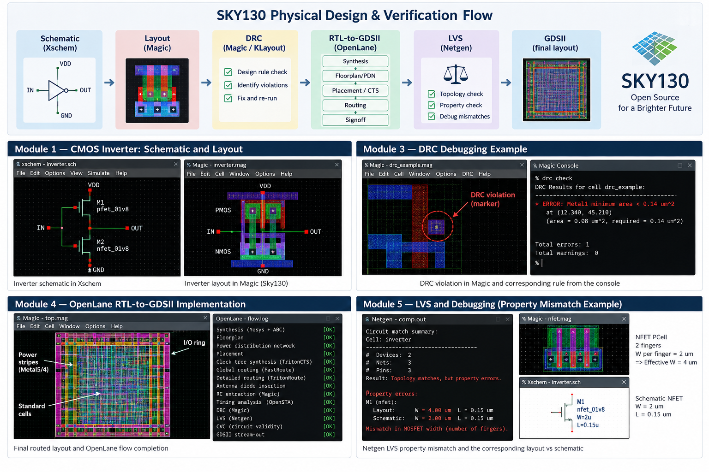

SKY130 Physical Design & Verification
Open-source PDK flow from device-level layout through DRC, extraction, RTL-to-GDSII, and hierarchical LVS debugging
SkyWater SKY130 · Magic · Xschem · Ngspice · Netgen · OpenLane · KLayout · OpenSTA
Overview
A five-module progression through the open-source SKY130 flow, built so that each stage feeds the next: device-level layout, then what lives inside a layout database, then design-rule debugging, then a full RTL-to-GDSII implementation, and finally layout-versus-schematic verification and failure debugging.
The aim was not to run the tools and collect passing results. It was to understand what each verification report actually means, and how to trace a failure back to the layout, schematic, netlist or device property responsible for it.

What the work covered
| Module | Focus |
|---|---|
| SKY130 & device-level flow | CMOS inverter schematic in Xschem, symbols and testbench, Ngspice simulation, device layout in Magic, netlist extraction, and a first LVS run — establishing the schematic → simulation → layout → extraction → LVS chain. |
| GDS, extraction & XOR | Reading SKY130 GDS libraries into Magic, GDS/CIF input styles, port metadata, LEF annotation, abstract views, parasitic R and C extraction into RC-aware SPICE, hierarchical DRC, and XOR comparison to isolate geometry changes between two layout versions. |
| DRC rule debugging | Minimum width, spacing and wide-metal spacing, notch rules, via sizing, contact cuts, enclosure and overlap, minimum area and hole rules, N-well requirements, substrate taps, well contacts, and deep N-well structures — with violations introduced deliberately so each had to be understood, not just cleared. |
| RTL-to-GDSII (OpenLane) | Synthesis with Yosys and ABC, pre-CTS timing in OpenSTA, floorplanning with PDN generation, placement, clock tree synthesis in TritonCTS, global and detailed routing, antenna diode insertion, RC extraction, post-layout timing, and signoff across Magic, KLayout, Netgen and CVC. |
| LVS & debugging | From simple SPICE comparisons through subcircuits, blackboxes, primitive devices and terminal symmetry, to a real power-on-reset analog block, layout-versus-Verilog for digital cells, macros, and property checking. |
Property checking — the lesson that stuck
Topology matching does not mean LVS has passed. Two netlists can agree on devices, nets, connectivity and pins and still fail because device properties differ. In one case an NFET PCell drawn as 2 µm per finger with two fingers extracted as an effective 4 µm width, while the schematic expected 2 µm. The Netgen property error traced back to the PCell parameters, not to anything wrong with the connectivity.
The same pattern held throughout: the tool reports a symptom, and the engineering work is finding the cause. Other mismatches debugged included MIM capacitor and resistor dimensions, missing and additional devices, fill and tap-cell mismatches, broken power networks, missing vias, merged top-level ports, and substrate connectivity.
Debugging method
For large LVS mismatches this meant divide and conquer rather than interpreting hundreds of errors at once: fix the obvious structural problems, re-run, see which errors disappear together, then investigate the remaining nets and pins. Errors cluster, and clearing one structural fault often removes dozens of downstream symptoms.
What each check answers
| Check | Question it answers |
|---|---|
| DRC | Can this geometry be manufactured under the process rules? |
| Extraction | What electrical circuit does this geometry represent? |
| LVS | Does the extracted circuit match the intended schematic or netlist? |
| XOR | Are two physical layout versions geometrically identical? |
| STA | Does the implemented design satisfy timing requirements? |
| CVC | Is the final circuit electrically valid? |
What I took away
- Verification reports are debugging information, not pass/fail results. A DRC marker points back to a physical rule; an LVS mismatch points back to connectivity, hierarchy, pins, devices or properties.
- The tool reports the symptom, not the cause. Moving from a Netgen property error to a finger count in a Magic PCell is the skill being practised.
- File formats are not interchangeable. GDS carries geometry, LEF carries abstract physical information and pin metadata, SPICE carries connectivity and devices — which one you hand the tool decides what a hierarchical LVS run can even see.
- Open-source and commercial flows ask the same questions. Working through Magic, Netgen and OpenLane made the Cadence and Synopsys flows easier to reason about.
Full documentation
Each lab in the repository has its own write-up with the commands used, screenshots, verification results, the errors encountered, the debugging process, corrections, and key observations.
View on GitHub